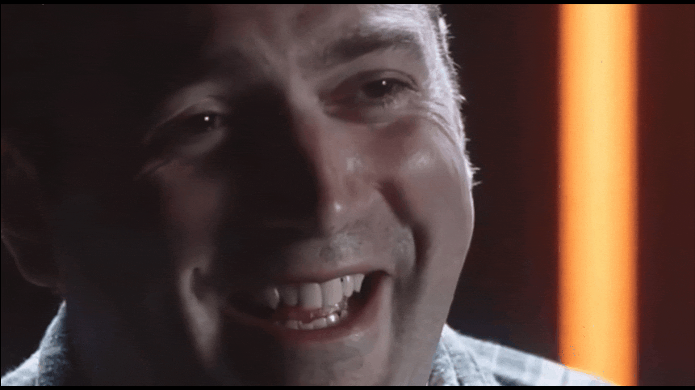

Jump Scare (Leviathan)

Para ver el Jump Scare, tendremos que ir a la zona del Almacén y entrar por la puerta del portal a las máscaras.
Mirando la ventanilla redonda veremos el susto.

Para ver el Jump Scare, tendremos que ir a la zona del Almacén y entrar por la puerta del portal a las máscaras.
Mirando la ventanilla redonda veremos el susto.